Arşiv
Koleksiyon
38 banknot. Ülke, nominal veya seri numarasına göre arayın; bölgeye göre filtreleyin.
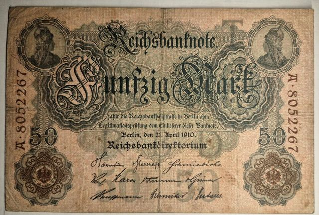
Almanya
50 Mark (Reichsbanknote) · 1910
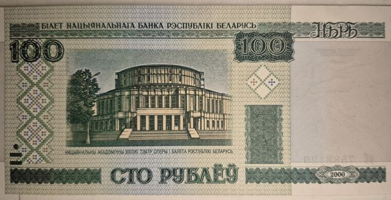
Belarus
100 Ruble · 2000
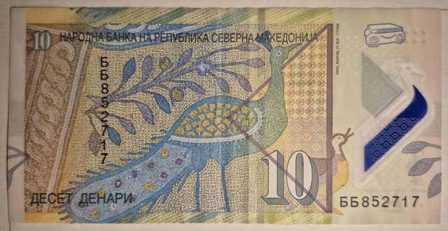
Kuzey Makedonya
10 Denari · Yıl okunamadı
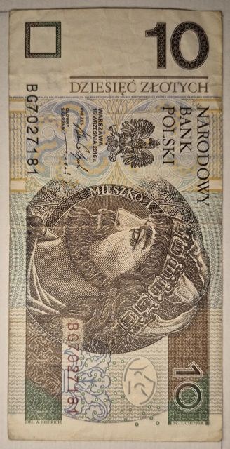
Polonya
10 Złotych · 2016
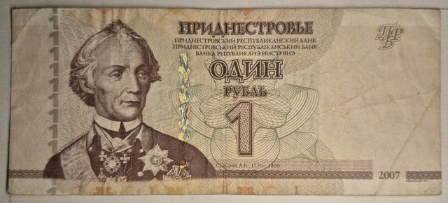
Transdinyester
1 Ruble · 2007
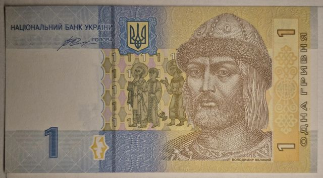
Ukrayna
1 Hryvnia · 2014
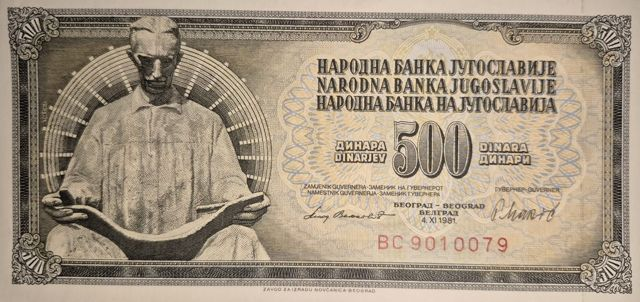
Yugoslavya
500 Dinara · 1981
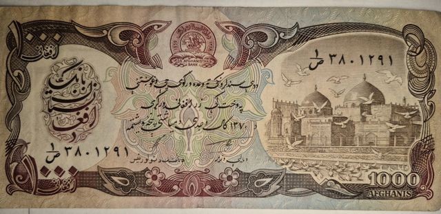
Afganistan
1000 Afghanis · 1370 SH
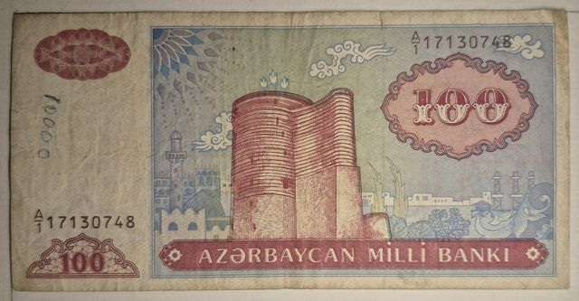
Azerbaycan
100 Manat · 1993
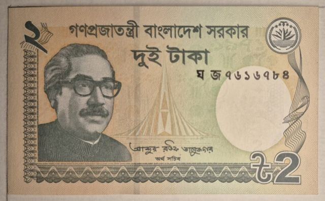
Bangladeş
2 Taka · 2018
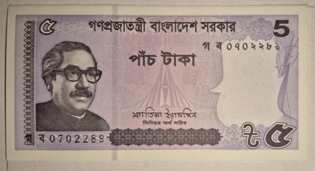
Bangladeş
5 Taka · 2022
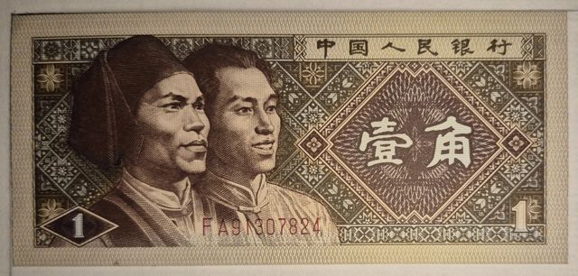
Çin
1 Jiao (Yi Jiao) · 1980
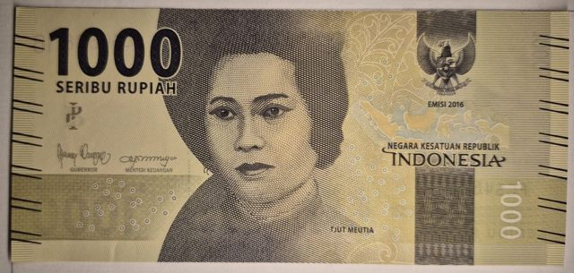
Endonezya
1000 Rupiah · 2016
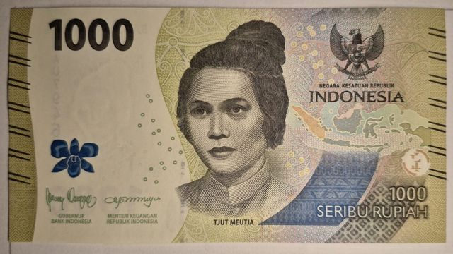
Endonezya
1000 Rupiah · 2022
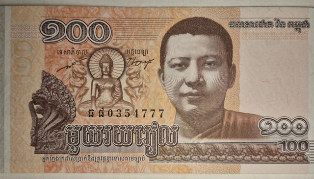
Kamboçya
100 Riel · 2014
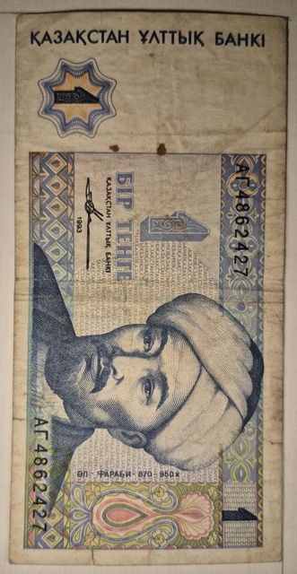
Kazakistan
1 Tenge · 1993
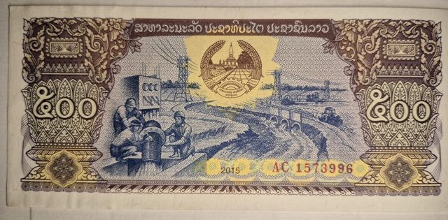
Laos
500 Kip · 2015
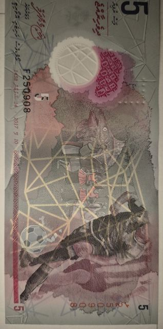
Maldivler
5 Rufiyaa · 2017
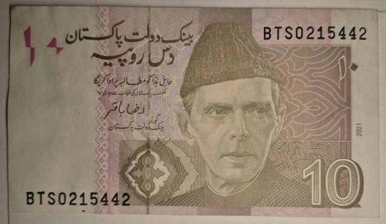
Pakistan
10 Rupees · 2021
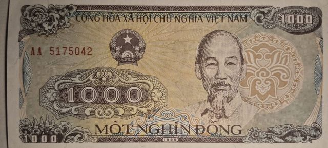
Vietnam
1000 Dong · 1988
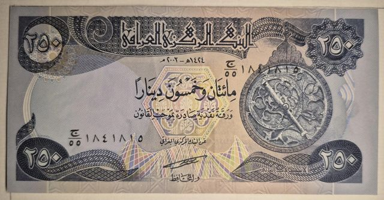
Irak
250 Dinars · 2002
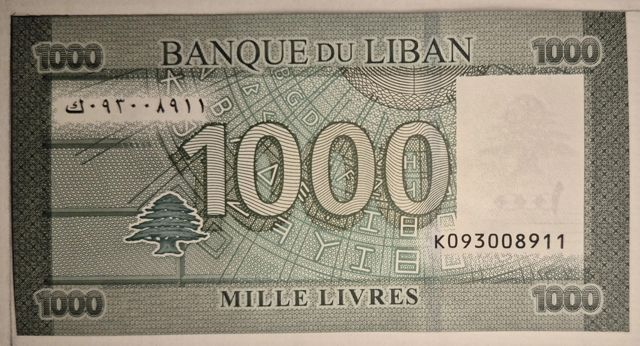
Lübnan
1000 Livre · 2012
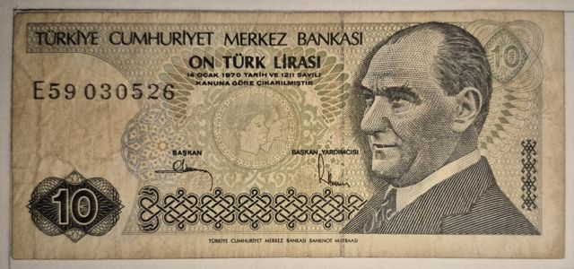
Türkiye
10 Lira (Türk Lirası) · 1970
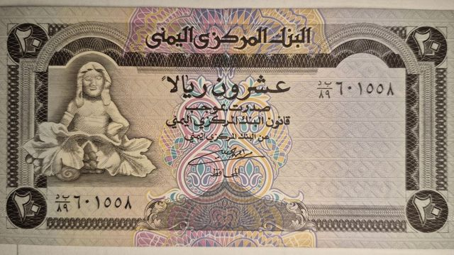
Yemen
20 Rials · Yıl okunamadı
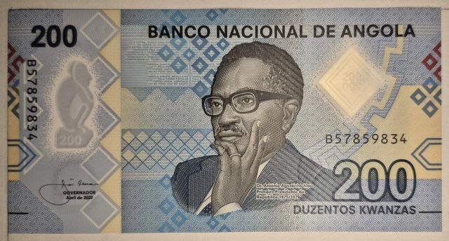
Angola
200 Kwanza · 2020
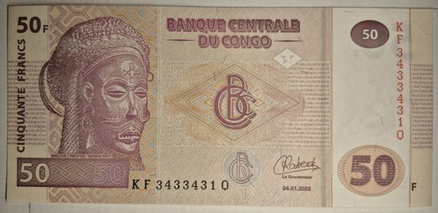
Kongo Demokratik Cumhuriyeti
50 Francs · 2022
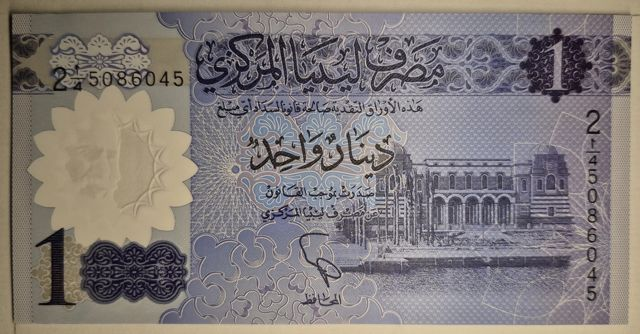
Libya
1 Dinar · Yıl okunamadı
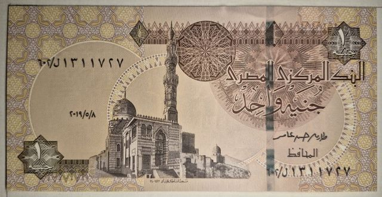
Mısır
1 Pound · 2019
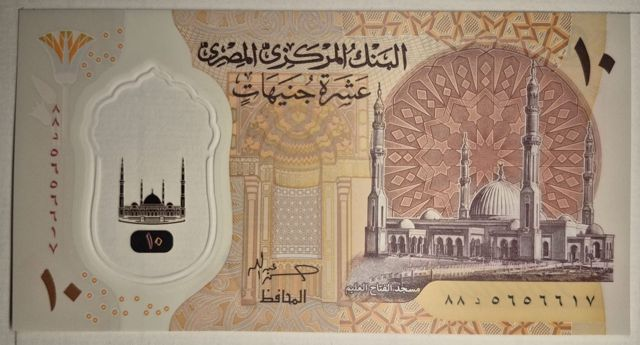
Mısır
10 Pounds · Yıl okunamadı
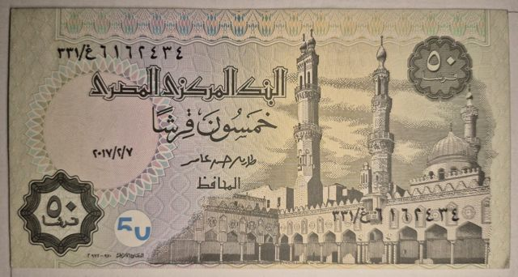
Mısır
50 Piastres · 2017
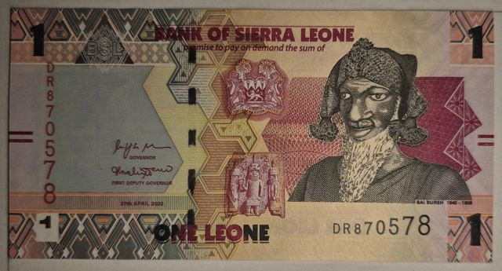
Sierra Leone
1 Leone · 2022
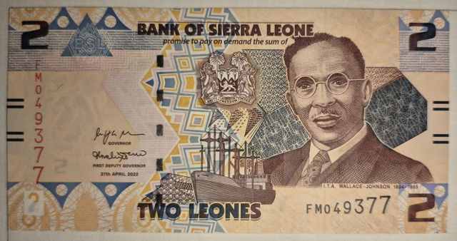
Sierra Leone
2 Leones · 2022

Brezilya
500 Cruzados Novos · Yıl okunamadı

Guatemala
1 Quetzal · 2024

Honduras
1 Lempira · 2014

Küba
3 Pesos · 2005
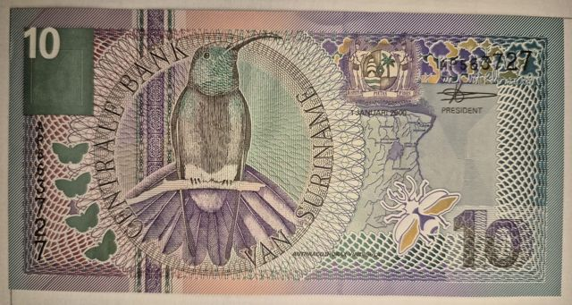
Surinam
10 Gulden · 2000
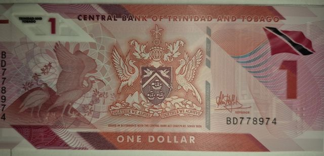
Trinidad ve Tobago
1 Dolar · 2020
Eşleşen banknot bulunamadı.